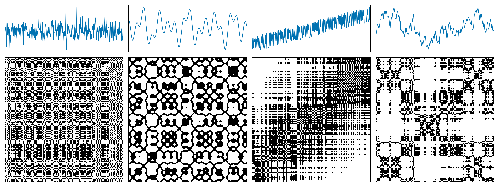
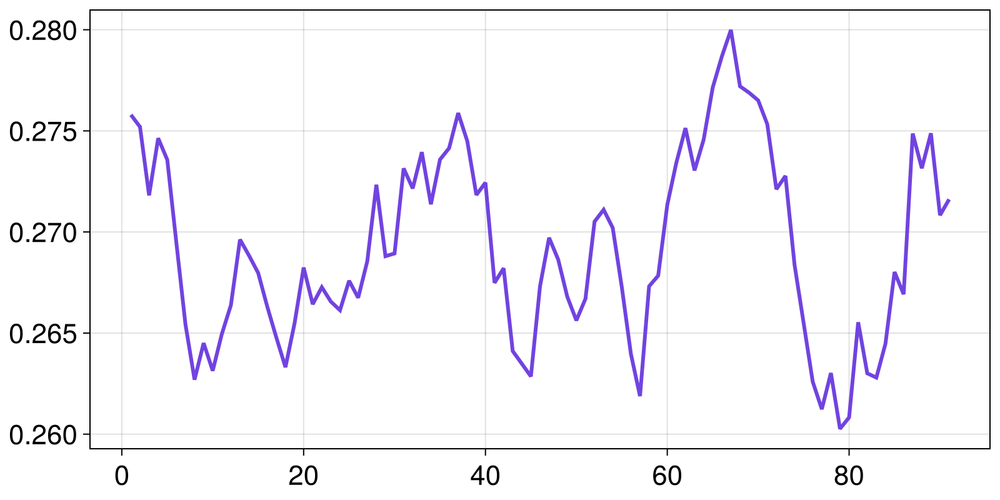

Tutorial for RecurrenceMicrostatesAnalysis.jl
In this tutorial we go through a typical usage of RecurrenceMicrostatesAnalysis.jl. We'll see how to calculate distributions of recurrence microstates, how to optimize our choices regarding the distribution generation, and how to perform Recurrence Microstate Analysis (RMA).
RecurrenceMicrostatesAnalysis.jl interfaces with, and extends, ComplexityMeasures.jl. It can enhance your understanding if you have first view the tutorial of ComplexityMeasures.jl. Regardless the current tutorial is written to be self-contained.
Crash-course into RMA
Recurrence Plots (RPs) were introduced in 1987 by Eckmann et al. (Eckmann et al., 1987) as a method for analyzing dynamical systems through recurrence properties.
Consider a time series $\vec{x}_i \in \mathbb{R}^d$, $i \in \{1, 2, \dots, K\}$, where $K$ is the length of the time series and $d$ is the dimension of the phase space. The recurrence plot is defined by the recurrence matrix
\[r_{(i,j)} = \Theta(\varepsilon - \|\vec x_i - \vec x_j\|),\]
where $\Theta(\cdot)$ denotes the Heaviside step function and $\varepsilon$ is the recurrence threshold.
The following figure shows examples of recurrence plots for different systems: (a) white noise; (b) a superposition of harmonic oscillators; (c) a logistic map with a linear trend; (d) Brownian motion.

A recurrence microstate is a local structure extracted from an RP. For a given microstate shape and size, the set of possible microstates is finite. For example, square microstates with size $N = 2$ yield $16$ distinct configurations.

Recurrence Microstates Analysis (RMA) uses the probability distribution of these microstates as a source of information for characterizing dynamical systems.
Probability distributions of recurrence microstates
Extracting propabilities corresponding to recurrence microstates is done via the ComplexityMeasures.jl interface and it is relatively straightforward. We first specify the options of RecurrenceMicrostates, which essentially means e.g., what sort of distance threshold defines a recurrence, and what is maximum microstate size to consider. Then we pass this to functions like probabilities, entropy, etc.
Let's first generate some data of a chaotic map using DynamicalSystems.jl:
using DynamicalSystemsBase
function henon_rule(u, p, n)
x, y = u # system state
a, b = p # system parameters
xn = 1.0 - a*x^2 + y
yn = b*x
return SVector(xn, yn)
end
u0 = [0.2, 0.3]
p0 = [1.4, 0.3]
henon = DeterministicIteratedMap(henon_rule, u0, p0)
X, t = trajectory(henon, 10_000)
X2-dimensional StateSpaceSet{Float64} with 10001 points
0.2 0.3
1.244 0.06
-1.10655 0.3732
-0.341035 -0.331965
0.505208 -0.102311
0.540361 0.151562
0.742777 0.162108
0.389703 0.222833
1.01022 0.116911
-0.311842 0.303065
⋮
-0.582534 0.328346
0.853262 -0.17476
-0.194038 0.255978
1.20327 -0.0582113
-1.08521 0.36098
-0.287758 -0.325562
0.558512 -0.0863275
0.476963 0.167554
0.849062 0.143089Notice that X is already a StateSpaceSet. Because RecurrenceMicrostatesAnalysis.jl is part of DynamicalSystems.jl, this data type is the preferred input type. Other types are also possible as we described in Input data for RecurrenceMicrostatesAnalysis.jl.
Now, we specify the recurrence microstate configuration
using RecurrenceMicrostatesAnalysis, Distances
ε = 0.25
N = 2
rmspace = RecurrenceMicrostates(ε, N)RecurrenceMicrostates, with 3 fields:
shape = RecurrenceMicrostatesAnalysis.Rect2Microstate{2, 2, 2}()
expr = ThresholdRecurrence{Float64, Euclidean}(0.25, Euclidean(0.0))
sampling = SRandom{Float64}(0.05)
and finally call
probs = probabilities(rmspace, X) Probabilities{Float64,1} over 16 outcomes
1 0.6039814
2 0.044011
3 0.0963746
4 0.0024846
5 0.0964636
6 0.0025304
7 0.0157524
8 0.0047166
9 0.0391118
10 0.0708682
11 0.0072186
12 0.001714
13 0.0071702
14 0.0017194
15 2.0e-7
16 0.005883The probabilities function is the same function as in ComplexityMeasures.jl. Given an outcome space, that is a way to symbolize input data into discrete outcomes, probabilities return the probability (relative occurrence frequency) for each outcome. And indeed, the recurrence microstates is an outcome space.
If instead of the probabilities of the microstates you want their direct count simply replace probabilities with counts.
counts(rmspace, X)16-element Vector{Int64}:
3018772
219414
481161
12586
481206
12740
78878
23625
197240
355219
35697
8688
35820
8727
1
30226Recurrence microstates analysis (RMA)
To actually analyze your data, there are two ways forwards. One way, is to utilize these probabilities within the interface provided by ComplexityMeasures.jl to calculate entropies. For example, the corresponding Shannon entropy is
entropy(Shannon(), probs)2.0935977222430693(note that the API of ComplexityMeasures is re-exported by RecurrenceMicrostateAnalysis). This number corresponds to the recurrence microstate entropy as defined in our publication (Corso et al., 2018).
ComplexityMeasures allows the convenience syntax of
entropy(Shannon(), rmspace, X)2.0960679349927984so in this case we wouldn't need to calculate the probabilities directly. Naturally, any other entropy could be estimated instead,
entropy(Tsallis(), rmspace, X)2.0954483256950667although we haven't explored alternative entropies in research yet.
The second way forward is the more traditional recurrence quantification analysis route, where you estimate (approximately, really) various quantities such as laminarity that fundamentally relate to the context of recurrences.
These quantities are estimated using a ComplexityEstimator, similar to ComplexityMeasures.jl. We begin by defining our estimators:
- For recurrence rate:
rr_estimator = RecurrenceRate(ε)RecurrenceRate, with 3 fields:
ε = 0.25
metric = Euclidean(0.0)
sampling = SRandom{Float64}(0.1)
- For laminarity:
lam_estimator = RecurrenceLaminarity(ε)RecurrenceLaminarity, with 3 fields:
ε = 0.25
metric = Euclidean(0.0)
sampling = SRandom{Float64}(0.1)
- For determinism:
det_estimator = RecurrenceDeterminism(ε)RecurrenceDeterminism, with 3 fields:
ε = 0.25
metric = Euclidean(0.0)
sampling = SRandom{Float64}(0.1)
Then, we use the complexity function to estimate the quantities:
rr = complexity(rr_estimator, X)
lam = complexity(lam_estimator, X)
det = complexity(det_estimator, X)
rr, lam, det(0.1343556154413502, 0.16862151513962298, 0.8259791507638684)We can compare these values with the exact values computed using RecurrenceAnalysis.jl.
using RecurrenceAnalysis
rp = RecurrenceMatrix(X, ε)
qt = rqa(rp)
qt[:RR], qt[:LAM], qt[:DET](0.13413876612338765, 0.16915133841224356, 0.8254655734955636)All of these quantities, like laminarity, are in fact complexity measures, which is why RecurrenceMicrostateAnalysis.jl fits so well within the interface of ComplexityMeasures.jl.
We have also implemented a unified function to compute all RMA estimations, similar to the rqa function from RecurrenceAnalysis.jl. This is the rma function:
rma(ε, X)Dict{Symbol, Float64} with 5 entries:
:RR => 0.134213
:LAM => 0.169129
:DISREM => 0.437412
:RENT => 4.25674
:DET => 0.825711Disorder
Recurrence Microstates Analysis also introduces a novel quantifier: "Disorder index via symmetry in recurrence microstates" (DISREM). This quantifier uses the equiprobability property of recurrence microstates, due to the disorder condition, to quantify the disorder of a sequence of data elements. We also estimate disorder using a complexity estimator:
disorder = Disorder()TODO: DisorderThen, we can estimate disorder for our time series:
complexity(disorder, X)0.3405311289565543Note that disorder is free of parameters (except for the microstate length and the number of thresholds used, or its range). This is because the quantifier is defined as the maximum total entropy of recurrence microstate classes, considering a large range of thresholds. Moreover, this quantifier can only be estimated through recurrence microstates.
It is also possible to estimate disorder while splitting the data into windows. We prepared a special complexity estimator for this, aiming to facilitate its usage. In this situation, you must define a WindowedDisorder.
window_len = 1000
win_disorder = WindowedDisorder(window_len; step = 100)TODO: WindowedDisorderHere, we are using windows of length 1000 points, moved in steps of 100 points. Finally, we compute the quantifier:
wd = complexity(win_disorder, X)91-element Vector{Float64}:
0.2757950182678834
0.27519591864416953
0.2718106385315357
0.2746364627428292
0.27356934897403634
0.2694649963222921
0.2654307356361719
0.26269550207961767
0.26450238805761556
0.2631371784716226
⋮
0.262797682409092
0.2644711603237822
0.2680207844771246
0.2669210518281533
0.2748678791851335
0.27315100424821986
0.2748805522078512
0.27083049523248726
0.2716123112946993Plotting it:
using CairoMakie
lines(wd)
Optimization of free parameters
Spatial data
Finally, let's discuss spatial data. This is an exploratory method implemented in the package based on Spatial Recurrence Plots (Marwan et al., 2007). It means that the microstates can be a tensor structure, e.g., a hypercube. However, it is also important to note that the number of bits (or recurrences) inside the microstate increases, resulting in an exponential increase in the probability distribution length, which can result in a lack of memory.
To exemplify its use, we will define here 2D square microstates $3\times 3$, but that is a projection of the tensorial hypercubic microstate with side length $3$ into the first and third dimensions; that is:
shape = (3, 1, 3, 1)
srmspace = RecurrenceMicrostates(ε, shape)RecurrenceMicrostates, with 3 fields:
shape = RecurrenceMicrostatesAnalysis.RectNMicrostate{4, 2, 9}((3, 1, 3, 1))
expr = ThresholdRecurrence{Float64, Euclidean}(0.25, Euclidean(0.0))
sampling = SRandom{Float64}(0.05)
As an example, let's use an RGB image:
import Images
img = Images.load("assets/example.jpg")
We need to reorganize it as an Array{3, Float64}. The first dimension must be our RGB values, while the other two need to be the horizontal and vertical positions of the pixels.
W, H = size(img)
arr = Array{Float64}(undef, 3, H, W)
for i in 1:H, j in 1:W
c = img[i, j]
arr[1, i, j] = float(c.r)
arr[2, i, j] = float(c.g)
arr[3, i, j] = float(c.b)
end
size(arr) == (3, H, W)trueFinally, we can use the probabilities function to estimate our recurrence microstate distribution.
probs = probabilities(srmspace, arr) Probabilities{Float64,1} over 512 outcomes
1 0.5224381607816787
2 8.10289656900006e-5
3 2.629233255681287e-5
4 4.131483807419356e-5
5 8.099653877463734e-5
6 1.139363889809191e-5
7 4.1600784509669604e-5
8 0.003656102280292526
9 2.5328368800104963e-5
10 4.183661662140243e-5
⋮
504 1.581843889447896e-5
505 0.0032677398544937097
506 3.514193254958697e-5
507 1.0733308985240011e-5
508 5.2204385833456564e-5
509 3.569024220936578e-5
510 1.570936654280253e-5
511 5.124926578093864e-5
512 0.445585593124777Although Marwan adapted some RQA quantities for spatial recurrence plots, they cannot be estimated using RMA. The only exception here is the recurrence rate, which can be estimated as:
RecurrenceMicrostatesAnalysis.measure(rr_estimator, probs)0.4610904607997918Another quantity that can be computed is the recurrence microstate entropy:
entropy(Shannon(), probs)1.294872439852801RMA with spatial data is a very interesting and complex topic, and we have implemented it to motivate possible research using this feature. So feel free to try it and notify us if you have some success 😁
Note that if you are using a grayscale image, you need to use an Array with size (1, H, W). The first dimension stores the features of the data, which are used to compute the recurrences, i.e., $\vec{x}_{\vec{i}}$.